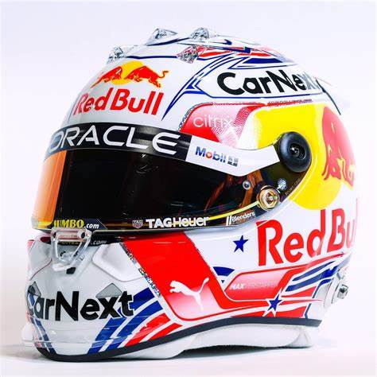
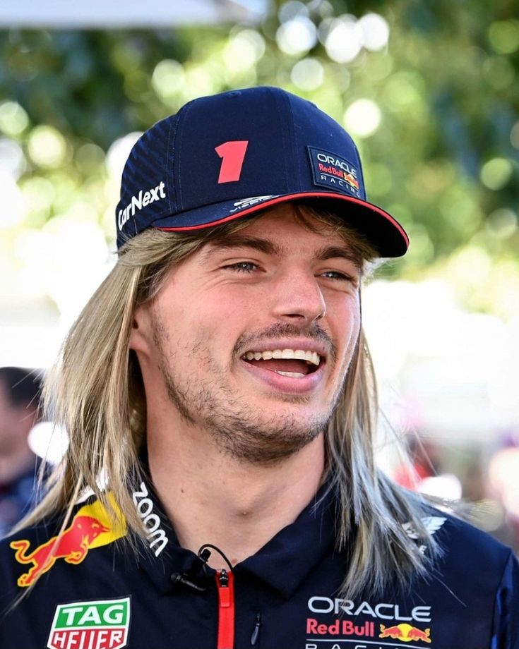

Max Emilian Verstappen
- Team: Red Bull Racing
- Land: Niederlande
- Geburtsort: Hasselt, Belgien
- Geburtsdatum: 30.09.1997
- Alter: 27
- Podien: 111
- Grands Prix gefahren: 206
- Weltmeisterschaften: 3
- Team: Red Bull
- Fahrernummer: 1
Er heißt Max und ist von Natur aus Max. Verstappen, der mit nur 17 Jahren als jüngster Formel-1-Teilnehmer aller Zeiten ankam, forderte sein Auto, seine Rivalen und die Rekordbücher des Sports an seine Grenzen. Der Holländer mit dem Babygesicht und dem Löwenherz packte den Toro Rosso – und dann den Red Bull – mit seinem instinktiven Rennstil bei den Hörnern. Der jüngste Punktesammler der Formel 1 wurde bald zum jüngsten Rennsieger - im Alter von 18 Jahren und 228 Tagen - mit einer opportunistischen, aber kontrollierten Fahrt beim Debüt für Red Bull in Barcelona 2016. Als echter Rad-an-Rad-Rennfahrer sorgte eine weitere atemberaubende Fahrt in Brasilien vom Ende des Feldes bis zum Podium auf einer tückischen nassen Strecke für immer wieder Lob. Verstappens kompromisslose Einstellung und sein hartes Verteidigen haben ihn manchmal in Schwierigkeiten mit seinen Kollegen und Zahlmeistern gebracht. Doch die Fehler, die sein Potenzial anfangs beeinträchtigten, sind der Reife gewichen, während der Draufgängertum und die Energie, die ihn zu einem Blockbuster-Talent machen, geblieben sind – und die Siege weitergehen. Sie führten zu seinem ersten F1-Fahrertitel nach dem mittlerweile legendären Showdown in der letzten Runde mit Lewis Hamilton im Jahr 2021. 2022 folgte eine überwältigende Titelverteidigung, bevor er mit einem Rekord von 19 Siegen in 23 Grands Prix den dritten Meisterschaftstriumph in Folge feierte. Als Sohn des ehemaligen Formel-1-Fahrers Jos Verstappen und der superschnellen Kart-Mutter Sophie Kumpen liegt ihm der Rennsport in den Genen. Obwohl er aus dem Haus seines Vaters ausgezogen ist, um in Monaco zu leben, bleibt Verstappen seiner Familie nahe, und obwohl er keine Angst hat, seine Meinung zu sagen, kann er immer noch überraschend schüchtern sein. Nachdem er im Alter von nur 24 Jahren der erste Weltmeister der Niederlande wurde, sind die Erwartungen an die Führungsfigur der neuen Generation himmelhoch - aber bei Verstappen hat man das Gefühl, dass der Himmel die Grenze ist.
